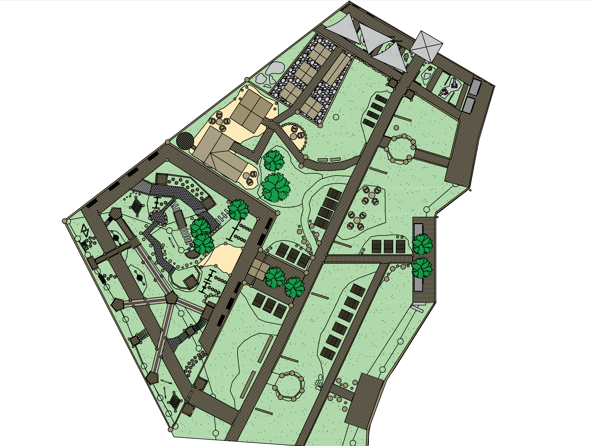
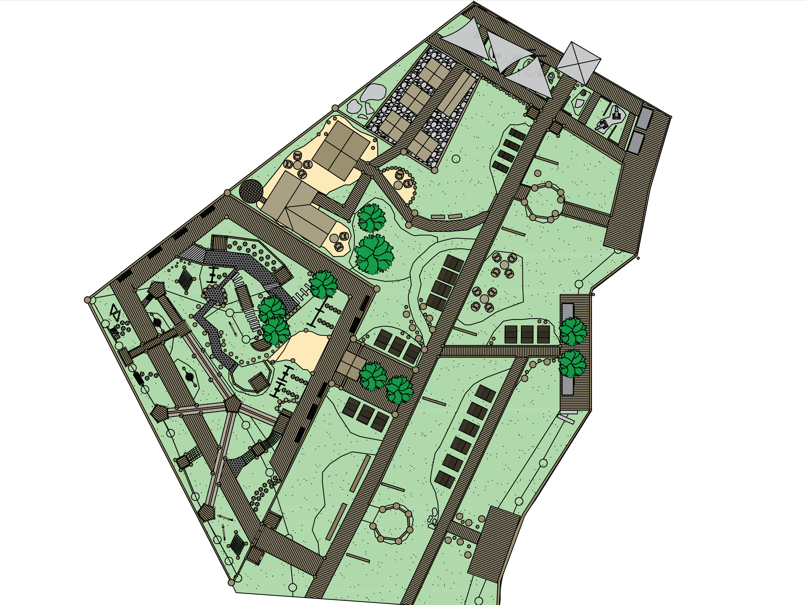

Галич — місто з багатою історією та культурним спадком, і покращення його інфраструктури відіграє ключову роль у збереженні та відродженні його унікального характеру. Відповідно, розширення зон відпочинку, створення парків, але і додаткових просторів для розваг та культурних заходів, може відображати багатовікову спадщину міста і створити місце для зустрічей, відпочинку та творчості для всіх, хто цінує цю культурну спадщину.
Тут ви можете описати ваші креслення.
 

Тут ви можете надати контактну інформацію або зміст.
Інші варіанти Галичу в процесі
Проект в процесі